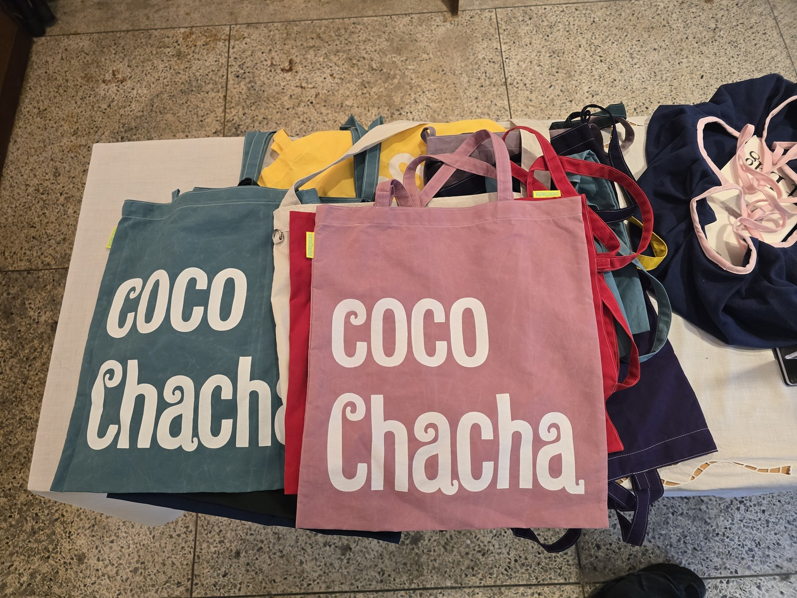
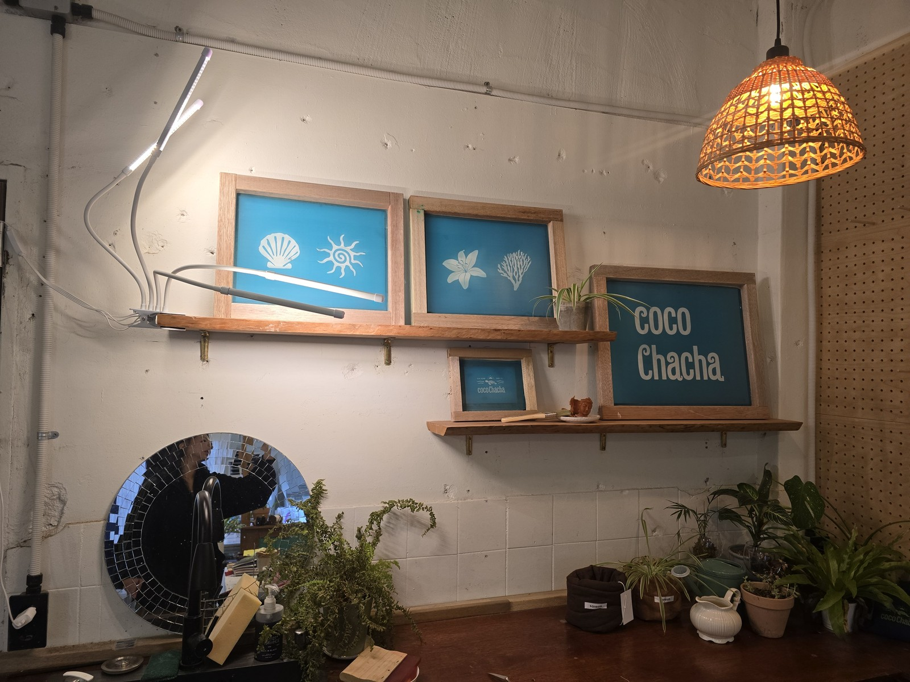
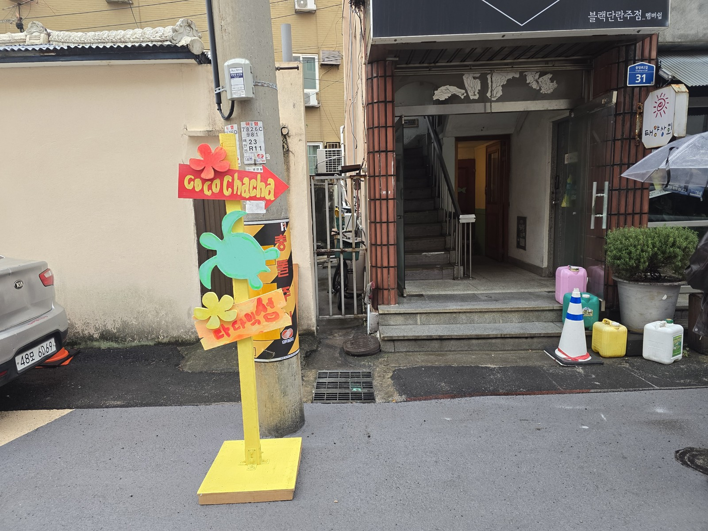

코코차차 쇼룸 운영 매뉴얼
차차, 내 것이 되는 중 — 직접 고르고, 찍고, 꾸며 완성하는 내 가방
기업 전달용 운영안 · 업[業]프로젝트 원픽팀 · 2026.10.28 · v1.8
사용 대상: 코코차차 매장 운영 담당자 / 적용 범위: 운영 준비·첫 2주 파일럿·첫 4주 모집 점검
기존 가방·손잡이·실크스크린 판을 활용해 손님이 자기 조합의 가방을 완성하는 프로그램이다. 손님이 찾아올 이유와 매니저 한 사람이 반복 운영할 수 있는 범위를 첫 운영에서 확인한다. 기업 확정 전 운영안이며, 프로젝트 기간에 실제 파일럿은 진행하지 않았다.
첫 파일럿 한눈에 보기
| 정할 내용 | 이번 제안 |
|---|---|
| 운영 장소·담당 | 제주시 중앙로2길 31 지하 1층 · 기업 운영 담당자와 매니저 지정 |
| A 예약 클래스 | 첫 2주 4회·회당 최대 3명·유료 예약 1명도 진행. 큰 가방 55,000원 / 작은 가방 45,000원 |
| A에 필요한 시간 | 고객 예약 90분(진행 60분＋여유 30분), 직원 준비~정리 약 150분/회 추정 |
| B 워크인 | 매니저가 있는 시간에 상시 접수. 키링 13,000원＋와펜 4개×2,000원＝세트 21,000원이 기본이며, 다른 바탕은 그 바탕 가격으로 바꾼다. A 진행 중 결제·마감은 직원이 안내한 시각에 한다. 2주 점검에서 동시 응대가 어려우면 A 진행 중에는 키링만 받는다 확정 필요 |
| 구매·업무 부담 | 와펜·마커 15만 원 상한을 포함해 첫 구매 약 18만~22만 원. 키링 본체 신규 구매 등은 추가 확인. 첫 2주 작업 약 19.5시간＋회차 밖 B·추가 협의 추정 |
| 첫 운영에서 볼 것 | 현재 구성·가격의 유료 예약, 실제 소요시간, 완성품 품질, A와 B를 함께 응대할 때의 부담 |
| 다음 결정 | 2주 뒤 추가 2주 진행·범위 조정·보류. 첫 4주 모집 목표는 A 유료 참여 10명·리뷰 5건. 계속 운영은 수요·운영 부담·자원을 함께 보고 결정 |
예약을 공개하기 전에
- 대표·매니저가 시작일, 상주 시간, 가격·구성, 초기·추가 구매 상한을 정한다(부록 A).
- 사용할 제품의 원단·잉크·결합법을 확인하고 재료 시험·전체 시연을 마친다(2장).
- 판매할 회차별 재료를 배정하고 결제·취소·노쇼·재작업 기준을 정한다(3장).
- 실제 입구 사진, 예약 링크, 메뉴판, 관리 카드를 준비하고 첫 모집 담당·게시일을 정한다(7장·부록 C).
필요한 부분 바로 찾기
| 지금 할 일 | 펼칠 곳 | A4 시작 쪽 |
|---|---|---|
| 시작 준비·예약 공개 | 2장 / 부록 A / 3장 | 4 / 20 / 7 |
| 진행·문제 대응 | A 4장 / B 5장 / 상황별 대응 6장 | 9 / 11 / 13 |
| 모집·기록·운영 판단 | 7장 / 8장 / 9장 | 14 / 16 / 18 |
| 구매·안내·집계 | 부록 B / 부록 C / 부록 D | 22 / 24 / 26 |
3명 정원과 1명 개설은 원픽팀 기준, 예약 마감·핀형 예비분·업무시간 배정은 운영 제안이다. 모두 기업 확정이 필요하다. 확인은 자료·발언으로 확인한 값, 추정은 실측 전 값이다.
1. 운영 기준
1-1. 두 가지 프로그램
| 구분 | A · 예약 가방 클래스 | B · 워크인 꾸미기 |
|---|---|---|
| 고객 경험 | 가방·도안·색을 고르고 직접 찍어 완성 | 바탕(기본 키링)과 와펜을 골라 조합 |
| 운영 방식 | 매니저가 확실히 있는 회차만 예약 공개 | 매니저가 있는 시간에 상시 접수. A 진행 중 결제·마감은 가능한 시각에 |
| 고객 시간 | 진행 60분 + 여유 30분 = 예약 90분 추정 | 선택·대기에 따라 달라짐. 총 체험시간 미확정 |
| 직원 업무 | 준비 30분 + 고객 90분 + 정리 30분, 약 150분 추정 | 결제·부착 약 3분/건 추정. 선택 안내와 대기는 따로 기록 |
| 가격 | 큰 가방 55,000원 / 작은 가방 45,000원 기존 제안 가격·매니저 긍정 반응 확인 | 키링 세트 21,000원 = 키링 13,000원 + 와펜 4개 × 2,000원. 바탕 변경 시 바탕 판매가 + 와펜. 와펜 추가 개당 2,000원 확정 필요 |
| 기본 구성 | 본체·손잡이·파우치·실크스크린·와펜 2개·패브릭 마커 꾸미기. 큰·작은 가방 같은 구성 원픽팀 기준 | 브랜드 색 키링 + 고객이 고른 와펜 4개. 다른 바탕을 고르면 그 바탕 가격으로 바꾼다(5-1) |
| 주요 고객 가설 | 제주에 머무는 2030 여성 개별 여행자 | 지나가다 들른 여행자·도민·재방문 고객 |
패브릭 마커는 모든 원단에 쓸 수 있는 것이 아니다. 마커를 쓸 수 있다고 확인한 원단·위치에서만 제공한다(2-2). 고객이 원하지 않으면 생략할 수 있다. 추가 키링은 A 기본 구성에 포함하지 않는다.
1-2. 첫 운영의 기본값
| 항목 | 적용 기준 |
|---|---|
| 매장 영업시간 | 매일 11:00~19:00 확인. 실제 체험 가능 시간은 매니저 상주 일정으로 별도 공지 |
| A 제안 시간 | 11:30 / 14:30. 매니저가 준비부터 정리까지 있는 날에만 공개 |
| 초기 회차 | 첫 2주 A 4회, 주 2회. 11:30 회차를 1회 이상 포함 |
| 초기 예약 정원 | 회차당 3명 원픽팀 기준·기업 확정 필요. 첫 4회 기준 재료 12세트와 맞춤 |
| 공간상 최대 인원 | 6명. 테이블 기준 상한이며 6명 운영 가능성을 검증한 수치는 아님 |
| 정원 단계 | 파일럿 3명 → 정규 4명 → 5명 → 6명 원픽팀 기준. 4명은 4주 점검에서 계속 운영을 정한 뒤, 5·6명은 앞 단계를 2회 무리 없이 운영한 뒤 올린다. 5·6명 회차의 시간 상한은 실측 후 기업과 정한다 |
| 최소 개설 인원 | 파일럿은 유료 예약 1명도 진행 원픽팀 기준·기업 확정 필요 |
| B 운영 범위 | 키링 세트가 기본이고, 파우치·작은 가방·큰 가방으로 바탕을 바꿀 수 있다 원픽팀 기준. 2주 점검에서 A와 동시 응대가 어려우면 A 진행 중에는 키링만 받는다(9-1). 부착 시험을 통과한 바탕만 판매한다(2-2·5-1) |
| 첫 2주 목적 | 준비·진행·정리 시간과 A/B 동시 응대 부담 확인 |
| 첫 4주 목적 | 유료 참여 10명·리뷰 5건을 모집 목표로 점검 |
예약 정원과 공간상 최대 인원을 구분한다. 파일럿은 회차당 3명으로 시작한다. 공간상 최대 6명은 테이블 기준이다. 이후 인원을 늘리려면 해당 인원으로 시연하고 재료를 확보한 뒤 예약 정원을 바꾼다. 시간이 넘칠 때는 정원을 늘리지 않고 선택지·동선·진행 방식을 먼저 조정한다(9-1).
1-3. 직원과 고객의 작업 범위
| 고객이 하는 일 | 매니저가 하는 일 |
|---|---|
| 본체·색·도안·와펜 선택 | 준비·시연·선택 도움·결제 |
| 연습 후 실크스크린 찍기 | 판과 잉크 관리·건조 확인 |
| 와펜 고르기·패브릭 마커 꾸미기 | 다리미·망치·리벳 작업 |
| 확인된 방식으로 손잡이 끼우기 | 결합 상태·와펜·완성품 최종 확인 |
칼·재봉틀·열전사 프레스는 사용하지 않는다. 다리미·망치는 매니저만 사용한다. 핀형도 바탕 손상 여부와 고정 상태를 먼저 확인한다. 아동 동반 B 이용은 보호자와 함께 안내하고, 핀·열 작업은 직원이 맡는다.
브랜드 색과 기존 도안을 사용한다. 검정 키링·검정 잉크, 고객별 신규 실크스크린 판, ASMR 콘텐츠, 다른 브랜드와 혼합한 체험은 이번 운영에 넣지 않는다.
2. 시작 준비 — 예약 공개 전에 끝낼 일
2-1. 준비 순서
기업 결정 → 재료 확인 → 시험·시연 → 재고 배정 → 안내물·예약 공개 순서로 진행한다.
| 순서 | 할 일 | 완료 기준 |
|---|---|---|
| 1 | 부록 A 운영 결정표 작성 | 시작일·근무일·가격·정원·예약 정책 확정 |
| 2 | 본체·손잡이·파우치·키링의 원단과 결합 방식 확인 | 제품별 재료·부착 방식 표 작성 |
| 3 | 잉크 제품 안내 확인 | 건조·정착·운반·세탁 조건을 실제 사용 잉크 기준으로 기입 |
| 4 | 열접착·핀 부착 시험 | 사용할 바탕마다 합격한 방식 확보 |
| 5 | 2~3명으로 전체 시연 | 고객 시간·직원 시간·대기·완성 상태 기록 |
| 6 | 판매 가능한 키트 수량 배정 | A 예약분, B 판매분, 견본·재작업분 구분 |
| 7 | 메뉴판·길 안내·고객 카드 준비 | 미정 문구와 빈 QR 없이 게시·발송 가능 |
| 8 | A 4회와 B 가능 시간 공지 | 예약 화면·플레이스·현장 안내의 시간 일치 |
기존안의 준비시간 약 6.5시간은 플레이스 정비·주문·견본·시험·시연·회차 등록의 작업시간 추정이다. 업체 답변, 배송, 다음 날 접착 확인, 숙소 협의, 추가 디자인 제작까지 끝나는 기간을 뜻하지 않는다. 시작일은 이 준비가 끝나는 시점에 맞춘다.
2-2. 재료별 사용 조건표
운영 담당자가 실제 제품과 시험 결과를 보고 채운다. 잉크 제품명이나 원단을 추측해 입력하지 않는다.
| 바탕 | 원단·제품명 | 실크스크린 | 와펜 방식 | 운영 가능 여부 |
|---|---|---|---|---|
| 큰 가방 | 시험 후 확정 | 열접착 시험 통과 / 핀형 시험 통과 | □ 가능 □ 보류 | |
| 작은 가방 | 시험 후 확정 | 열접착 시험 통과 / 핀형 시험 통과 | □ 가능 □ 보류 | |
| 파우치 | A에서 별도 인쇄 없음 | A 파우치에는 와펜을 붙이지 않음. B 바탕으로 팔 때는 핀형만(열접착하지 않음) | □ 가능 □ 보류 | |
| 키링 (B) | B에서 인쇄 없음 | 바탕 시험 후 확정 | □ 가능 □ 보류 | |
| 패브릭 마커 | 쓸 원단·위치: / 확인한 사람: | 해당 없음 | 해당 없음. 마커 제품·고정 조건 확인 | □ 가능 □ 보류 |
와펜 시험 방법
- 실제 바탕과 같은 자투리 또는 B급 제품에 시험한다.
- 열접착은 원단·와펜 제품 안내상 허용되는 조건에서만 시험한다. 조건을 확인할 수 없으면 핀형 대안을 먼저 확인한다.
- 원단 손상·광택 변화·색 변화, 식은 뒤와 다음 날의 가장자리 들뜸을 확인한다.
- 통과한 제품과 조건을 사진으로 남긴다. 핀형도 원단 손상·고정·사용 중 간섭을 확인한다.
- 통과한 부착 방식이 없는 바탕은 접수를 보류한다. 실패한 열접착을 온도를 올려 반복하지 않는다.
| 시험 기록 | 기입 |
|---|---|
| 시험일·담당자 | |
| 원단 / 와펜 제품 | / |
| 열접착 허용 조건·실제 적용값 | |
| 식은 뒤 / 다음 날 / 1주 뒤 결과 | / / |
| 핀형 고정 결과 | |
| 채택 방식·사진 위치 |
1주 뒤 내구성은 파일럿 중 같은 견본으로 추가 확인한다. 초기 시험 통과를 장기 내구성 검증으로 표시하지 않는다.
잉크 확인 기록
| 항목 | 실제 사용 제품 기준 기입 |
|---|---|
| 제품명·제조사 | |
| 적용 가능한 원단 | |
| 표면 건조 / 필요한 정착 공정 | / |
| 당일 운반 가능 조건·포장 방식 | |
| 세탁 가능 여부·최초 세탁 시점·방법 |
약 20분 건조는 기존안의 추정이다. 4-2 진행표는 이 건조시간 동안 와펜 고르기와 마커 꾸미기를 하도록 짰다. 실제 잉크에 추가 정착 공정이 필요하면 현재 장비와 90분 진행표로 가능한지 먼저 판단한다. 고객의 이동 일정 안에 완성·운반할 수 있는 조건을 확인한 뒤 ‘당일 수령’으로 안내한다.
2-3. 시연에서 확인할 것
- 매니저가 준비·정리까지 혼자 완료하는가?
- 진행 약 60분(여유 포함 90분), 매니저 전체 약 150분 안에 끝나는가?
- 찍기 20분 안에 3명 인쇄가 끝나고, 마르는 동안 와펜 고르기·마커 꾸미기가 이어지는가?
- 한 사람씩 찍는 동안 나머지 손님이 혼자 할 일이 있는가?
- 마지막에 찍은 가방도 수령 전에 건조·정착 조건을 만족하는가?
- D링·손잡이 결합이 완성품과 같은 수준으로 고정되는가?
- B 손님이 온 상황을 넣었을 때 A 지도·안전 확인이 끊기지 않는가?
- 고객이 메뉴판만 보고 B의 순서와 가격을 이해하는가?
시연 참여자는 유료 모집 성과에서 제외한다. 3명 시연에서 시간이나 안전에 문제가 있으면 순서·선택지를 줄이거나 더 적은 인원으로 다시 확인한다.
2-4. 공간과 준비물
공간은 선택·견본 → A 작업 테이블 → 건조 → 직원 마감 → 수령 순서로 배치한다. B 견본대와 가격표는 A 테이블을 거치지 않고 볼 수 있게 둔다. 건조대·직원 마감 공간은 손님 동선과 분리한다.


사진은 10/20 현장 자료다. 파일럿의 승인된 완성 견본과 부품별 연결 사진은 시연 때 확정한다.
| 준비물 | 회차 3명 기준 | 준비 방법 |
|---|---|---|
| 본체·손잡이·파우치 | 예약 구성 3세트 | 크기·색·결합 부품 확인 |
| D링 / 개고리 | 6개 / 3개 + 확인된 예비분 | 1인 D링 2·개고리 1은 기존 계산 가정. 실제 시안으로 확정 |
| A 기본 와펜 | 6개 (큰·작은 가방 모두 1인 2개) | 열접착용·핀형 구분 |
| 리뷰 선물용 와펜 | 최대 3개 별도 보관 | 선물 운영을 확정한 경우만 사용 |
| 패브릭 마커 | 공용 1세트 | 쓸 수 있는 원단·위치를 확인한 뒤 사용 |
| 연습 천·견본 | 연습 천 3장·견본 1개 이상 | B급 제품 우선 활용 |
| 핀형 예비분 | 첫 구매 때 10개분 권장 운영 제안 | 열접착 실패 대응용. B에서 파우치를 팔면 그만큼 증량 |
| 판·잉크·스퀴지·세척 도구 | 해당 회차 사용분 | 보유 여부·세척 방법 확인 |
| 앞치마·건조대·다리미·덧천·내열 받침 | 필요한 수량 | 보유 여부 확인 후 부족분 견적 |
| 망치·리벳·세터 | 결합 시안에 필요한 경우 | 직원 작업용 |
| 메뉴판·수령 카드·회차 기록지 | 회차분 | 부록 C와 8장 사용 |
핀형 10개분은 바탕별 시험을 통과한 방식으로 확보한다. 2주 점검까지 구매를 미루지 않는다. 견본·시연·불량 대응에 쓰는 재료도 고객 예약 재고에서 차감하거나 별도로 확보한다.
2-5. 한 세트를 준비하고 연결 견본을 만드는 방법
- 기업이 선택한 큰·작은 가방의 본체·손잡이·파우치·결합 부품을 각각 한 세트로 펼친다. 실제 한 세트에 들어가는 D링·개고리·리벳 수를 2-4 준비물 표와 맞춘다.
- 기업이 기존 결합 방식으로 견본을 완성하고, 연결 전 부품 → 연결 위치 → 고정된 완성 상태를 사진으로 남긴다. 고객이 끼우는 부분과 직원이 리벳으로 마감하는 부분을 구분해 표시한다.
- 매니저가 그 견본을 보고 한 번 직접 연결한다. 고객에게 보여 줄 짧은 시연 순서와 직원 마감 순서를 정한다. 결합 방향·부품 규격이 불명확하면 기업이 확인한 뒤 시연한다.
- 인쇄·와펜·마커까지 제공할 구성으로 끝내 보고, 수령 때 확인할 손잡이 고정·부착 상태와 운반 조건을 견본 카드에 적는다.
| 견본 카드 | 현장에 둘 자료 |
|---|---|
| 큰 가방 / 작은 가방 | 크기별 승인 완성품 또는 사진, 한 세트 부품 목록, 연결 순서 사진 |
| B 바탕 | 브랜드 색 키링과 와펜 4개 조합 예시, 판매할 바탕별 시험을 통과한 부착 조건 |
| 확인 기록 | 확인한 기업 담당자: / 시연일: / 사진·견본 보관 위치: |
3. 예약 접수 — 회차와 재료를 함께 관리한다
3-1. 공개할 상품 정보
| 항목 | 고객에게 안내할 내용 |
|---|---|
| 상품 | 큰 가방 클래스 55,000원 / 작은 가방 클래스 45,000원 |
| 포함 | 가방 본체·손잡이·파우치·실크스크린·와펜 2개·패브릭 마커 꾸미기. 큰·작은 가방 같은 구성이며 가방 크기만 다르다 |
| 소요 시간 | 약 90분(진행 60분 + 여유 30분). 시연 후 확정한 시간으로 안내 |
| 참여 | 혼자 예약 가능. 함께 예약하는 경우 실제 참여 인원 입력 |
| 선택 | 크기는 예약 때 확정. 색·도안은 현장 재고 안에서 선택 |
| 장소 | 중앙로2길 31 지하 1층. 입구 사진과 확정한 주차 안내 첨부 |
| 수령 | 시험으로 확인한 당일 수령·운반·관리 조건 안내 |
| 변경·취소 | 기업이 확정해 예약 화면에 공개한 기준 적용 |
마커 꾸미기 등 구성 일부를 제공할 수 없으면 판매 전에 소개글과 구성표를 고친다. 기업이 확정하지 않은 구성·가격을 고객 화면에 게시하지 않는다.
3-2. 정원과 재고
큰 가방·작은 가방 상품을 나누어 등록해도 같은 시간의 정원은 합산한다. 회차 정원이 3명이라면 큰 가방 2명 예약 후 작은 가방은 최대 1명만 더 받는다.
예약 가능 인원은 다음 조건을 모두 만족하는 범위로 정한다.
- 매니저가 운영할 수 있도록 확인한 회차 정원 이내일 것.
- 해당 크기의 본체와 공용 손잡이·파우치·부품이 있을 것.
- 와펜 기본 2개, 확정된 선물분과 예비분까지 배정할 수 있을 것.
- 다른 회차·B 판매·견본에 이미 배정한 재료를 중복 계산하지 않을 것.
예약 도구에서 두 상품의 정원을 함께 묶을 수 없다면 담당자가 통합 대장을 관리하고, 한 상품 예약이 확정될 때 다른 상품의 잔여 수량도 즉시 조정한다.
| 회차 | 공개 정원 | 큰 가방 확정 | 작은 가방 확정 | 잔여 인원 | 재료 배정 완료 |
|---|---|---|---|---|---|
| 월 일 11:30 | □ | ||||
| 월 일 14:30 | □ | ||||
| 월 일 | □ | ||||
| 월 일 | □ |
첫 구매안은 12세트 기준이다. 6명씩 4회, 총 24명을 받을 수 있는 구매안이 아니다. 추가 예약은 재료·예산·시연 결과를 확인한 뒤 연다. 첫 2주 이후에도 남은 재료와 보충 가능한 수량을 확인해 다음 회차를 공개한다.
재고 배정표 — 예약 확정·B 판매·불량 사용 때 갱신
| 품목·크기·색 | 현재 보유 | 견본·시연·예비 배정 | A 예약 배정 | B 판매 배정 | 미배정 |
|---|---|---|---|---|---|
| 큰 가방 본체 | |||||
| 작은 가방 본체 | |||||
| 손잡이 | |||||
| 파우치 | |||||
| D링 / 개고리 | / | / | / | / | / |
| 와펜 / 핀형 | / | / | / | / | / |
미배정 = 현재 보유 − 견본·시연·예비 배정 − A 예약 배정 − B 판매 배정이다. 남은 가방 본체 수만으로 예약을 더 받지 않는다. 공용 부품까지 한 세트를 완성할 수 있는 수량으로 판단한다. B 판매분을 A로 돌리거나 반대로 바꿀 때는 두 배정 수량을 함께 고친다. B에서 가방·파우치를 바탕으로 팔면 A와 같은 본체를 쓰므로, B 판매 배정에 넣은 뒤 A 예약 가능 수량을 다시 확인한다.
3-3. 접수·변경 기준
아래 마감 기준은 이번 작성본의 권장안이며 부록 A에서 기업이 확정한다.
| 상황 | 운영 기준 |
|---|---|
| 일반 예약 | 전날 18:00 마감 권장. 마감 후 수량·구성을 확인하고 준비 |
| 당일 예약 | 시작 60분 전까지 직원 확인 후 접수 권장. 재료·좌석·준비시간이 모두 있을 때만 확정 |
| 후속 회차(3~4주차) | 2주차 시작에 유료 예약으로 공개. 2주 점검에서 보류하면 확정 고객에게 먼저 연락하고 공개한 기준으로 처리(9-1) |
| 1명만 예약 | 파일럿은 진행 원픽팀 기준. 1인 운영 손익을 기록하고 4주 뒤 재검토 |
| 예약 0명 | 고객 진행은 생략. 실제 작업하지 않은 150분을 운영시간으로 기록하지 않음 |
| 고객 변경·취소·노쇼 | 공개한 예약 정책 적용. 취소 인원과 노쇼 인원을 구분해 기록 |
| 매장 사정으로 진행 불가 | 고객에게 즉시 연락해 일정 변경 또는 취소를 안내하고 합의 결과 기록 |
취소·환불 금액과 기한, 결제·예약 확정 방식은 기업이 사용 중인 예약 운영 기준에 맞춰 기입한다. 환불 기준이 빈 상태로 유료 예약을 공개하지 않는다.
3-4. 예약 때 받을 정보
결제·연락에 필요한 정보는 예약 도구의 기본 항목을 사용한다. 추가 질문은 짧게 받는다.
- 어떻게 알고 오셨나요? 네이버 검색 / 인스타 / 블로그 / 숙소 안내 / 지인 소개 / 지나가다 / B 체험 후 / 기타. 숙소 안내라면 숙소명은 선택 입력.
- 제주 여행 중이신가요? 여행 중 / 제주 거주 / 기타. 여행 중이라면 체류 일수·제주 방문 횟수는 선택 입력.
- 다른 시간이 더 편한가요? 현재 시간 / 다른 요일 낮 / 19시 이후 / 기타. 원하는 요일·시각은 선택 입력.
색·공항 이동처럼 준비에 영향을 주는 요청은 별도 요청란에 받는다. 질문에 답하지 않았다는 이유로 예약을 거절하지 않는다.
4. A 예약 클래스 — 회차 진행표
4-1. 전날과 시작 전
전날
- 큰·작은 가방 수량, 요청사항, 결제·예약 확정 상태 확인
- 본체·손잡이·파우치·와펜·부품 배정
- 부록 C-1 안내 메시지 발송
- 입구 사진·주차 안내·연락처가 실제 내용인지 확인
시작 30분 전
- 해당 회차 재료와 재고 있는 색만 견본대에 배치
- 판·잉크·연습 천·앞치마·건조대·세척 도구 준비
- 다리미는 꺼 둔 상태로 직원 마감 공간에 배치
- 확인된 열접착 조건과 핀형 예비분 준비
- B 메뉴판과 ‘다음 접수 가능 시각’ 안내 준비
- 수령 카드·회차 기록지 준비
4-2. 고객 90분 진행표 — 진행 60분 + 여유 30분
진행은 고르기 → 찍기 → 잇기 → 다림질 → 완성 5단계 60분이다. 와펜 고르기와 마커 꾸미기는 따로 시간을 잡지 않고 잉크가 마르는 동안 한다. 나머지 30분은 도착·대기·건조 지연에 쓰는 여유다. 시간은 3명 기준 추정이다. 11:30 회차라면 고객 종료 13:00, 정리 종료 13:30을 기준으로 기록한다.
| 경과 | 단계 | 고객 | 매니저 |
|---|---|---|---|
| 0~5분 | 도착 (여유) | 앞치마 착용·자리 확인 | 예약 확인·전체 순서와 직원 전용 도구 안내 |
| 5~15분 | ① 고르기 10분 | 예약 크기의 본체 색·손잡이·파우치·도안·잉크 색 선택 | 재고 있는 조합 2~3개로 도움 |
| 15~35분 | ② 찍기 20분 | 연습 → 가방 인쇄. 찍고 나면 잉크가 마르는 동안 와펜 2개와 위치 고르기·마커 꾸미기 | 짧은 시연 후 한 명씩 지도·가방별 인쇄 종료 시각 기록 |
| 35~50분 | ③ 잇기 15분 | 확인된 방식으로 손잡이·파우치 연결 | 결합 시연·필요한 리벳 작업·고정 확인 |
| 50~60분 | ④ 다림질 10분 | 완성 조합 확인 | 마른 가방부터 시험 통과한 방식으로 와펜 부착·냉각·가장자리 확인 |
| 60~65분 | ⑤ 완성 5분 | 완성품과 관리 카드 수령 | 운반 가능 상태 확인·사진·리뷰·다음 방문 안내 |
| 65~90분 | 여유 25분 | — | 마지막 가방 건조, 찍기·다림질 순서 대기, 정착 지연에 사용. 남으면 일찍 끝낸다 |
| 고객 종료 후 30분 | 정리 | — | 판·도구 정리·재고 차감·기록·다리미 전원과 냉각 확인 |
순서를 운영하는 방법
- 먼저 찍은 사람은 와펜 고르기로 이동한다. 다른 손님이 찍는 동안 기다리기만 하게 두지 않는다.
- 건조시간은 각 가방의 인쇄 종료 시점부터 센다. 마지막에 찍은 가방은 찍기 단계가 끝난 뒤에도 마르는 시간이 남는다. 이때 여유 시간을 쓴다. 전체 일정의 ‘20분’이 지났다는 이유로 마지막 가방까지 마른 것으로 보지 않는다.
- 판 세척·보관은 실제 잉크 제품 지침에 맞춘다. 정리시간까지 방치하면 문제가 생기는 작업은 진행 중 필요한 시점에 처리한다.
- 패브릭 마커는 2-2에서 쓸 수 있다고 확인한 원단·위치에만 쓴다. 쓸 수 있는 곳을 견본으로 보여 주고, 다른 부분에 닿지 않게 한다.
- 건조·정착이 늦어지면 수령을 서두르지 않는다. 당일 수령 조건이 맞지 않는 문제는 6장에 따라 처리한다.
4-3. 매니저가 말할 문장
시작
오늘은 가방 색과 도안을 고르고, 직접 찍고 꾸며서 자기 조합의 가방을 완성해 볼 거예요. 약 90분 걸립니다. 다리미와 망치는 제가 맡고, 찍기와 끼우기는 순서대로 함께 해 볼게요.
인쇄 전
먼저 연습 천에 해 보고 가방에 찍을게요. 찍는 순서가 오기 전에는 옆에서 와펜과 위치를 골라 주세요.
수령 전
완성 상태를 같이 확인할게요. 관리 방법은 이 카드에 적혀 있어요. 직접 만든 조합이 잘 보이게 사진도 찍어 드릴 수 있어요.
리뷰와 다음 방문
이용 경험을 네이버에 남겨 주시면 다음 손님에게 도움이 됩니다. 다음에 오실 때는 와펜을 더 골라 다른 조합으로 바꿔 보실 수 있어요. 추가 와펜 가격은 메뉴판에서 확인해 주세요.
리뷰 선물은 기업이 운영 여부와 적용 조건을 확인한 뒤 추가 안내한다. 사진 촬영과 매장 계정 게시 여부는 각각 고객 의사를 확인한다.
4-4. 수령 전 확인
- 인쇄가 다른 면이나 포장에 묻어나지 않고 필요한 정착 조건을 충족함
- 손잡이·D링·리벳·개고리 결합 상태 확인
- 열접착 제품은 식은 뒤 가장자리 확인, 핀형은 고정 상태 확인
- 실제 원단·잉크에 맞는 관리 카드 제공
- 와펜·파우치·마커 꾸미기 등 약속한 구성 누락 없음
- 사진·리뷰는 고객 선택으로 안내
5. B 워크인 — 손님이 고르고, 직원이 마감한다
5-1. 메뉴와 가격
B는 키링 세트를 기본으로 하고, 손님이 다른 바탕을 고르면 그 바탕 가격으로 바꾼다 원픽팀 기준·확정 필요. 매니저가 있는 시간에는 상시 접수한다. A 진행 중 결제·마감 시점은 5-4를 따른다.
| 메뉴 | 가격 | 와펜 방식·먼저 확인할 것 |
|---|---|---|
| 키링 세트 — 브랜드 색 D링 키링 + 와펜 4개 | 21,000원 = 키링 13,000원 + 와펜 4개 × 2,000원 확정 필요 | 키링 원단 시험 후 확정. 키링 제품 확보 필요 |
| 바탕 변경 — 미니 파우치 | 파우치 9,000원 + 와펜 개당 2,000원 | 핀형만(파우치는 열접착하지 않음). A용 파우치와 재고를 나눔 |
| 바탕 변경 — 작은 가방 | 작은 가방 30,000원 + 와펜 개당 2,000원 | 바탕 시험을 통과한 방식. 본체 재고를 A와 나눔(3-2) |
| 바탕 변경 — 큰 가방 | 큰 가방 57,000원 + 와펜 개당 2,000원 | 바탕 시험을 통과한 방식. 본체 재고를 A와 나눔(3-2) |
| 와펜 추가 | 개당 2,000원 확정 필요 | 바탕과 같은 방식 |
세트 가격은 키링과 와펜 단품 가격을 더한 값이다. 할인 가격이 아니다. 바탕을 바꿔도 같은 방식으로 바탕 판매가 + 고른 와펜 수 × 2,000원을 받는다. 와펜 기본 개수를 4개로 유지할지, 바탕별로 다르게 안내할지는 기업이 메뉴판을 확정할 때 정한다. 키링 단품 13,000원이 매장 판매가와 같은지, B 세트용 가격인지도 기업이 확정한다. 메뉴판에는 바탕 가격·와펜 가격·합계가 함께 보이게 한다. 확정 전 가격은 고객 안내물에 게시하지 않는다.
바탕을 바꿀 때 함께 확인할 것
- 큰 가방에 와펜 2개를 붙이면 61,000원으로 A 큰 가방 클래스(55,000원)보다 비싸다. 직접 찍는 과정까지 원하는 고객에게는 A를 안내한다.
- 작은 가방에 와펜 2개를 붙이면 34,000원이고 A 작은 가방 클래스는 45,000원이다. A 예약 대신 B를 고르는지 바탕별 판매와 A 문의를 함께 기록한다(9-2).
- 가방·파우치 바탕은 A와 같은 재고를 쓴다. 판매 전에 A 예약분을 남기고 배정한다.
- 바탕마다 부착 방식과 마감 시간이 다를 수 있다. 시험을 통과하지 않은 바탕은 메뉴에서 뺀다.
5-2. 고객이 혼자 선택할 수 있는 진열
견본 3개, 세트·바탕·와펜 가격, 부착 방식, 3단계 안내를 한곳에 둔다. A 진행 중에는 다음 결제·마감 가능 시각을 추가한다. 2주 점검에서 'A 진행 중 키링만'으로 정했다면 그 안내도 붙인다.
코코차차에서 내 소품 꾸미기
① 바탕을 골라 주세요. 기본은 키링이고, 파우치·가방으로 바꿀 수 있어요. ② 와펜 4개를 대어 보며 위치를 정해 주세요. 견본 조합을 살펴보셔도 좋아요. ③ 계산대에서 가격과 조합을 확인한 뒤 직원이 마감해 드립니다.
와펜은 직원이 붙여 드려요. 다리미는 직원만 사용합니다. 지금 클래스 진행 중이라면 결제·부착 가능 시각을 확인해 주세요. 직접 찍는 가방 클래스는 예약 QR에서 확인할 수 있어요.
견본에 와펜을 대어 조합을 살펴보는 과정은 구매 전에 할 수 있도록 운영한다 운영 제안. 접착·인쇄·제품 변형은 결제와 조합 확인 후 진행한다. 구매하지 않은 손님에게도 클래스 안내를 볼 수 있게 둔다.
5-3. 직원 처리 순서
- 바탕·와펜 개수·부착 위치와 최종 금액을 확인한다.
- 해당 바탕에서 사용할 수 있는 부착 방식인지 확인한다.
- 결제 후 부착한다. 열접착은 시험에서 정한 조건을 사용한다.
- 식은 뒤 또는 핀 고정 후 완성 상태를 고객과 확인한다.
- 관리 안내와 A 예약 QR을 안내한다.
약 3분은 결제·부착에 드는 직원 시간의 추정이다. 고르기·질문·냉각·대기가 포함된 고객 총 체험시간으로 안내하지 않는다.
매장의 가방에 관심을 보이는 고객에게는 다음과 같이 선택지를 알려 준다.
직접 찍고 완성하는 클래스도 있어요. 큰 가방 클래스는 파우치와 와펜 2개까지 포함해 55,000원이고 약 90분 걸립니다. 오늘 일정에 여유가 있으시면 가능한 회차를 확인해 드릴게요.
5-4. A와 B가 겹칠 때
| A 진행 상태 | B 응대 |
|---|---|
| 인쇄 지도·리벳·다리미 작업 중 | 견본·메뉴판으로 선택 안내. 결제·부착은 다음 접수 시각에 진행 |
| 모든 A 고객이 잉크가 마르는 동안 혼자 와펜 고르기·마커 꾸미기를 하는 시간 | 판 관리와 건조 확인까지 여유가 있을 때만 B 한 건 접수 |
| A 종료 직후 | 수령 확인을 끝낸 뒤 B 접수 |
| 2주 점검에서 'A 진행 중 키링만'으로 정한 경우 | A 진행 중에는 키링만 접수. 다른 바탕은 A 종료 뒤 접수 시각을 안내. 키링도 인쇄 지도·리벳·다리미 중에는 위 행처럼 다음 시각에 마감한다 |
| 기다리기 어려운 B 고객 | 가능한 시각을 구체적으로 안내. 대기하지 않고 둘러보거나 다시 방문할 수 있게 안내 |
| 매니저 부재 | B 접수하지 않음. 매장은 닫고 복귀 시각·예약 안내 공지 |
“클래스 중에도 항상 3분 안에 해 드린다”고 약속하지 않는다. 다리미를 켠 채 결제·안내를 하러 자리를 옮기지 않는다.
6. 상황별 대응
| 상황 | 당일 처리 | 다음 회차에 반영할 것 |
|---|---|---|
| 지각 | 시작 후 5분까지 확인한 뒤 예정대로 시작. 이미 지난 단계 참여는 다른 고객 지도와 안전을 해치지 않는 범위에서 판단 | 고객 안내에 도착 시각 명시. 참여 불가 시 공개한 예약 정책 적용 |
| 당일 예약 요청 | 좌석·재료·준비시간을 확인한 뒤 확정. A 지도 중 즉시 시작하지 않음 | 당일 예약 요청 시각·접수/거절 이유 기록 |
| 원하는 색 품절 | 현재 가능한 색 안내. 특정 색을 확약한 예약이라면 임의 대체하지 않고 고객과 조정 | 견본과 예약 안내에서 품절 색 제거 |
| 인쇄 번짐·실수 | 작업을 멈추고 견본·고객 제품을 구분. 재작업 가능 여부와 예비 재료 확인 후 해결안 안내 | 원인·재료 소모·추가 시간 기록. 반복되면 시연·선택지 조정 |
| 잉크가 예정 시간에 마르지 않음 | 운반 가능 상태를 먼저 확인. 묻어나는 제품을 포장해 넘기지 않음. 수령 지연·재진행 등 가능한 해결안을 고객과 협의 | 당일 수령 약속·잉크·인원·시간표 재검토 |
| 열접착 손상·들뜸 | 같은 조건으로 반복하지 않음. 시험 통과한 핀형과 재료가 있으면 고객 동의 후 전환 | 해당 바탕 열접착 접수 보류. 구매·메뉴·관리 카드 수정 |
| 핀형도 사용할 수 없음 | 그 바탕의 와펜 체험 접수 보류. 결제 전이면 가능한 다른 조합 안내 | 바탕·방식 시험 후 재개 |
| A가 B의 선택 질문 때문에 끊김 | 다음 B 접수 시각 안내. 메뉴판·견본으로 먼저 선택하게 함 | 손님이 혼자 고를 수 있도록 메뉴판·견본 안내를 보완 |
| A가 B 다림질 때문에 끊김 | 추가 열접착 접수는 다음 시각으로 조정 | A 시간대 B를 시험 통과한 핀형으로 제한하거나 키링만 받는다(9-1). 키링만이어도 다림질은 남는다 |
| 진행 60분·고객 90분·매니저 150분을 넘김 | 남은 공정을 급하게 처리하지 않고 종료 예상 시각 안내 | 실제 지연 원인을 기록하고 선택지·동선·진행표부터 조정. 2주 점검에서 진행 60분 초과가 반복되면 정원을 2명으로 줄여 확인(9-1) |
| 매니저가 근무할 수 없음 | 신규 예약 차단, 기존 고객에게 즉시 일정 변경·취소 안내 | 근무가 확실한 회차만 다시 공개 |
지연되면 선택지·동선·진행 방식을 조정하고, 필요하면 현재보다 적은 인원으로 시연한 뒤 정원을 낮춘다.
6-1. 업무가 많아질 때 줄이는 순서
예약 안내·재료 확인·고객 마감·정리는 매회 유지한다. 추가 업무는 다음 순서로 줄인다.
- 별도 블로그 협찬과 신규 채널 확대를 보류한다.
- 촬영·편집을 단순화하고 같은 형식의 완성품 게시물을 사용한다.
- 숙소는 협조한 곳부터 관리한다. 여러 곳을 동시에 늘리지 않는다.
- A 중 B는 다음 접수 시각으로 미룬다. 다림질이 원인이면 핀형으로 제한한다.
- 그래도 초과하면 공개 회차나 인원을 조정한다. 확정 고객과의 변경은 개별 안내 후 처리한다.
한 사람이 맡는다는 사실만으로 부담이 낮다고 판단하지 않는다. 회차 밖 업무까지 포함한 시간을 8장에서 기록한다.
7. 모집과 홍보 — 첫 손님에게 예약까지 안내한다
7-1. 첫 고객 모집 순서
우선 모집 고객은 제주에 머무는 2030 여성 개별 여행자라는 가설이다. 고객의 실제 구성·유입 경로·가격 반응을 기록해 바꾼다. 워케이션과 체크아웃 날 오전 클래스는 그중 하나의 이용 장면이다.
| 시기 | 담당 역할 | 실행할 일·쓸 자료 | 완료 기준 |
|---|---|---|---|
| 준비 기간 | 기업 예약 담당 | 가격·구성·상주 회차 확정, 플레이스와 예약 화면 정비. 3-1 상품 정보와 부록 C-6 문안 사용 | 휴대전화에서 구성·날짜·결제·입구 정보를 확인하고 예약할 수 있음 |
| 준비 기간 | 기업의 숙소 접촉 담당 | 맹그로브 제주시티에 부록 C-4 문안으로 비치 가능 여부 문의. 카드에는 부록 C-7 내용 사용 | 비치 허용 여부·위치·기간·보충 담당 기록. 연락 전에는 후보로 표시 |
| 예약 공개 시 | 매장 계정 담당 | 부록 C-6 첫 모집글과 입구 사진 게시, 실제 예약 링크 연결 | 게시물에서 예약으로 이동 가능. 주 2회 게시물 업무에 포함 |
| 1~2주 | 매니저 | 동의받은 숙소에 카드 비치, 문의 때 가능한 회차 안내. 예약 경로는 기존 문항으로 확인 | 비치·게시 실행 여부와 실제 유입 경로 확인 |
| 2주 점검 | 대표·매니저 | 조회·예약·유료 참여와 문의 내용을 보고 막힌 단계 한 곳 수정 | 다음 2주에 바꿀 내용과 담당을 기록 |
| 첫 4주 점검 | 대표 | 모집 성과·업무시간·품질·다음 자원 검토 | 9장에 따라 다음 운영과 추가 협찬 검토 |
담당 역할별 이름과 공개일은 기업이 부록 A에서 정한다. 같은 사람이 여러 역할을 맡아도 별도 인력을 추가한다는 뜻은 아니다.
숙소는 제안할 후보이며 협력 확정 채널이 아니다. 기존안의 맹그로브 제주시티부터 비치 가능 여부를 확인하고, 불가하면 원도심 숙소 2~3곳을 후보로 검토한다. 동의 전에는 제휴 숙소처럼 표현하지 않는다.
숙소 협조가 확보되지 않으면 매장 인스타·기존 고객 접점·지인 소개로 공개 예약을 알리고, 공지 가능한 제주 여행·지역 커뮤니티 한 곳을 검토한다 운영 제안. 게시 허용 여부와 기업의 관리 가능 범위를 확인한 뒤 사용한다. 숙소 답변을 기다리느라 예약 공지까지 늦추지 않는다.
7-2. 준비할 홍보 자료
| 자료 | 내용 |
|---|---|
| 플레이스 사진 8장 | 입간판 → 건물 입구 → 계단 → 매장 → 견본 조합 → 찍는 손 → 완성품 → 메뉴·가격 |
| 예약 소개 | 큰/작은 가격·포함 구성·시간·혼자 참여·수령·길 찾기·변경 기준 |
| 숙소 카드 | ‘체크아웃 날, 내 가방을 완성하는 90분’·11:30 회차·가격·예약 QR. 짐 보관은 숙소에서 가능하다고 확인한 경우에만 표기 |
| 인스타 | 손 위주 제작·체험 과정, 완성 조합, 예약 가능한 날짜. 얼굴 게시 의사는 별도 확인 |
| 입간판 출력물 | 코코차차·가방/소품·지하 1층·영업시간·인스타·예약 QR |
| 벽 표식 | 건물 입구에서 내려갈 곳을 식별하도록 브랜드·층·방향 표시 |
간판 교체와 새 입간판 제작은 하지 않는다. 기존 입간판에 붙이는 출력물과 벽 표식의 디자인은 팀이 준비하고 출력·제작비는 견적을 받아 기업이 결정한다. 매일 입간판을 꺼내기 어려운 날에도 입구를 찾을 수 있도록 사진 안내를 먼저 갖춘다.
플레이스·입간판·블로그의 매장 영업시간은 매일 11~19시로 맞춘다. B 가능 시간은 실제 상주 일정으로, A 시간은 예약 회차로 구분해 안내한다.

7-3. 주간 업무시간
A 주 2회 운영 시 A 준비·진행·정리 약 5시간 외에 아래 업무를 따로 배정한다.
| 업무 | 주간 시간 예산 운영 제안·추정 |
|---|---|
| 사진·짧은 영상 정리와 게시물 2개 | 60분 |
| 모집 문의 응답·숙소 카드 확인 | 15분 |
| 주간 지표·다음 회차 점검 | 15분 |
| 합계 | 90분 |
90분은 업무를 제한하기 위한 초기 시간 예산이다. 충분하다고 검증한 값은 아니다. 실제 시간을 기록하고 초과하면 6-1 순서로 범위를 줄인다. B 응대 중 A 회차 밖에서 사용한 시간은 별도로 더한다.
첫 2주 예상 작업시간은 기존 준비 6.5시간 + A 10시간 + 위 주간 업무 3시간 = 약 19.5시간, 여기에 회차 밖 B 응대·추가 준비·협의 시간을 더한다. 시연과 A 회차는 서로 다른 활동이다. A 중 처리한 B 시간은 A 전체 경과시간에 이미 들어 있으므로 총 업무시간에 다시 더하지 않는다.
7-4. 겨울·도민·다음 방문
겨울 수요를 검증한 결과는 없다. 첫 4주에 도민 문의가 있으면 같은 A 구성으로 주말 낮·작은 가방 중심 안내를 시험하고, 유입 경로와 가격 반응을 분리해 기록한다 운영 제안. 새 프로그램을 추가하기보다 기존 회차의 고객과 시간부터 확인한다.
체험 후에는 와펜 추가 메뉴와 예약 QR을 안내한다. 향후 일정 안내를 원하는 고객에게만 가능한 채널을 확인한다. 로컬 커뮤니티는 현재 구축된 성과로 표현하지 않는다. 운영이 안정되면 반복 방문 고객과 주변 협조 매장 중 한 곳부터 작은 공동 활동을 검토한다.
단체·굿즈 문의가 오면 사용 목적·품목·수량·희망 납기를 받아 기업에 넘긴다. 기존안의 10~20개는 소량 주문의 제안 방향이며 확정 최소 주문수량이 아니다. 맞춤 도안·판비·와펜·납기는 즉석에서 확약하지 않는다.
7-5. 블로그와 리뷰 선물
블로그 협찬은 첫 4주 점검 후, 리뷰가 3건 이상이고 기업이 별도 비용을 확정한 경우 진행하도록 정리한다. 이는 기존안의 두 시작 조건을 함께 적용한 권장안이다. 2명 재료비 약 8만 원은 추정이며 진행 시간·기타 비용은 별도다.
리뷰 선물은 와펜 1개가 기존 제안이다. 플랫폼 운영정책과 보상 안내 방식을 확인하고 기업이 시행 여부를 정한다. 확정 전에는 고객 문구에서 선물을 약속하지 않는다. 리뷰를 쓰지 않아도 기본 구성과 응대는 동일하게 제공한다.
8. 기록 — 회차는 간단히, 지표는 주마다
8-1. A 회차 기록지
| 회차 필수 기록 | 기록 |
|---|---|
| 날짜·회차·담당자 | |
| 공개 정원 / 예약 인원 / 취소 / 노쇼 / 유료 참여 | / / / / 명 |
| 큰 가방 / 작은 가방 | / 명 |
| 준비 시작 / 고객 시작 / 고객 종료 / 정리 종료 | / / / |
| 진행(고르기 시작~완성) / 고객 전체 / 직원 준비~정리 | 분 / 분 / 분. A 중 B 처리 시간은 직원 총 시간에 포함 |
| B 응대로 A가 끊긴 횟수·시간·원인 / A 중 B 처리 | 회·분· / 건·직원 분 |
| A 매출 / 추가 상품 매출·구매 고객 수 | 원 / 원·명. A 기본 구성·B 바탕 결제 제외 |
| 품질 문제·재작업 소모 / 다음에 바꿀 한 가지 | / |
유입 경로·여행/도민 구분은 예약 문항에서 확인하고, 이미 저장된 답을 매회 다시 옮겨 적지 않는다. 주간 점검 때 모아서 본다. 기록이 없는 방문 경로, 고객의 가격 반응, 긴 대기·건조, 재방문 확인은 발생했을 때 아래에 메모한다.
| 관찰 메모 — 해당할 때만 | 내용 |
|---|---|
| 유입 경로·가격/구성 반응·지연 원인·재방문 확인 |
개인 식별은 기존 예약 내역으로 대조하고, 별도 기록지에는 필요한 경우 예약 식별값만 적는다. B 재방문은 고객 답변 등 확인 방식을 함께 적고, 확인 불가를 신규로 단정하지 않는다.
8-2. B 일일 기록지
| 날짜·담당자 | 문의·체험 요청 | 유료 이용 | A 중 처리 | A 밖 직원 시간 | B 매출 | 추가 상품 구매 고객 | 대기 후 이탈·이유 |
|---|---|---|---|---|---|---|---|
| 건 | 명 | 건 | 분 | 원 | 명 | ||
| 건 | 명 | 건 | 분 | 원 | 명 | ||
| 건 | 명 | 건 | 분 | 원 | 명 | ||
| 건 | 명 | 건 | 분 | 원 | 명 | ||
| 건 | 명 | 건 | 분 | 원 | 명 | ||
| 건 | 명 | 건 | 분 | 원 | 명 | ||
| 건 | 명 | 건 | 분 | 원 | 명 |
바탕과 와펜 결제는 B 매출로 기록한다. 그 외 매장 상품을 추가로 산 경우만 추가 구매로 센다. B 고객이 A를 문의하면 유입 경로에 ‘B 체험 후’를 남긴다.
8-3. 주간 점검표
| 지표 | 이번 주 | 누적·메모 |
|---|---|---|
| 공개한 A 회차 / 합계 좌석 | 회 / 석 | |
| A 누적 예약 인원 / 취소 / 노쇼 / 유료 참여 | / / / 명 | 무료 시연 제외 |
| B 유료 이용 | 명 | |
| 플레이스 조회 | 조회 기간: | |
| 새 리뷰 / 누적 리뷰 | / 건 | 시작 전 값: 건 |
| 인스타 게시물 / 태그 게시물 / 팔로워 | / / | 시작 전 값: |
| 숙소 안내로 예약한 인원 | 명 | 숙소명: |
| 재방문한 고객 | 명 | 같은 고객 중복 여부: |
| 상품 추가 구매 고객 | 명 | A 명 / B 명 |
| 영업시간 밖 참여 요청 | 건 | 원한 요일·시각: |
| 매니저 실제 총 업무시간 | 시간 | A / A 밖 B / 홍보·문의 / 기타 |
주간에는 예약 도구·회차 기록·계정 통계를 함께 펼쳐 위 표를 채운다. 첫 2주는 유료 참여·소요시간·품질·B 응대와 실제 유입 경로를 먼저 본다. 팔로워 등 홍보 변화와 재방문·추가 구매는 주간에 확인해 누적한다. 가동률·연인원·전환율·중복 시간의 계산 정의는 부록 D를 따른다.
9. 2주·4주 점검과 이후 운영
9-1. 첫 2주 — 운영 가능성 점검
| 확인 결과 | 다음 행동 |
|---|---|
| 예약 5명 이상, 매니저 회당 약 150분 안, 재료·동시 응대에 무리 없음 | 같은 방식으로 2주 더 진행. 다음 회차 재료와 업무시간 확인 |
| 예약 5명 미만 | 사진·예약 연결·게시물·숙소 비치를 점검하고 2주 더 모집. 모집 성과 판단은 첫 4주 말에 함 |
| 유료 운영이 거의 없거나 없음 | 운영 부담을 검증했다고 쓰지 않음. 시연 결과와 모집 결과를 구분해 기록 |
| 진행 60분 초과가 반복되거나, 고객 90분·매니저 150분을 넘긴 회차가 있음 | 원인을 기록하고 선택지·동선을 먼저 조정. 3명에서 진행 60분 초과가 반복되면 정원을 2명으로 줄여 다시 확인 원픽팀 기준 |
| A/B 겹침으로 반복 지연 (회당 2회 이상 또는 합계 10분 이상, 임시 기준) | 선택 질문이면 다음 접수 시각 안내와 메뉴판·견본 보완, 다림질이면 핀형 제한 검토. 대기 안내 개선. 그래도 동시 응대가 어려우면 A 진행 중 B는 키링만 받는다 원픽팀 기준. 키링 작업도 A 지도를 끊으면 다음 처리 가능 시각을 안내한다(5-4) |
| 와펜 들뜸·원단 손상·수령 문제 | 해당 재료·방식 접수를 멈추고 시험 통과한 대안 확보 후 재개 |
예약 5명은 모집 중간 점검 목표다. 재료 12세트는 준비 수량이며 모집 목표가 아니다. 첫 2주가 끝났다는 이유로 추가 구매·협찬을 자동 실행하지 않는다.
2주 끝에는 대표가 추가 2주 진행 / 범위 조정 / 보류 중에서 고른다. 2주 모집 부진만으로 수요 실패를 확정하지 않고, ① 추가 2주의 시간·재고·예산이 있는지 ② 운영 문제를 조정해 진행할 수 있는지 ③ 무엇을 바꾸고 무엇을 계속 확인할지 순서로 정한다. 3명 회차나 A·B 겹침이 없었다면 ‘미확인’으로 두고 계속 기록한다.
후속 회차 접수 — 기존 기준: 모집 기간을 확보하도록 3~4주차 회차는 2주차 시작에 미리 공개해 유료 예약을 받는다. 2주 점검에서 보류하면 예약 고객에게 먼저 연락하고 공개한 변경·취소 기준에 따라 처리한다. 관심 접수 방식으로 바꾸는 대안은 부록 A의 기업 검토 메모에 두며, 채택 전에는 이 절차를 변경하지 않는다.
9-2. 첫 4주 — 모집 성과 점검
목표는 A 유료 참여 10명·리뷰 5건이다. 플레이스 조회 약 130 → 예약 13명 → 유료 참여 10명 → 리뷰 5건은 이 목표에서 역산한 가정이다. 조회→예약 10%, 참여 약 80%, 리뷰 약 50%를 검증된 전환율로 설명하지 않는다. 예약은 인원, 리뷰는 건수이므로 실제 예약 단위와 리뷰 작성 가능 단위를 보고 비율도 조정한다.
| 보이는 현상 | 먼저 확인할 것 |
|---|---|
| 조회 자체가 적음 | 예약 공개 여부·게시물·숙소 비치·사진과 검색 정보 |
| 조회는 있는데 예약이 적음 | 구성·가격·시간·입구·수령 조건을 고객이 이해하는지 |
| 가격 부담 반응이 반복됨 | 작은 가방 45,000원 구성을 앞세워 같은 기간 반응 기록 |
| 예약은 있는데 유료 참여가 적음 | 취소와 노쇼를 구분하고 사유·전날 안내·접근성 확인 |
| 이용은 있는데 리뷰가 적음 | 리뷰 안내·QR 접근·고객 예약 단위 확인 |
| 참여는 늘지만 매니저 시간이 초과됨 | 회차를 늘리기 전에 6-1의 업무 축소와 B 운영 방식 적용 |
| 목표에 못 미침 | 노출·예약·참여 중 막힌 단계와 다음 수정안을 남김. 근거 없이 할인·채널을 동시에 늘리지 않음 |
4주 끝 결정 — 첫 4주 10명은 초기 모집 목표이며 계속 여부의 판단선이 아니다. 유입·예약·유료 참여와 매니저 부담을 함께 본다.
| 4주 결과 | 결정 |
|---|---|
| 운영 문제를 풀 수 없거나, 다음 운영의 시간·재고·예산이 없음 | 보류 |
| 정규 최소 인원(기준안 2명, 기업 확정) 이상의 회차를 반복 모집했고, 현재 시간·비용 부담 안에서 다음 운영이 가능함 | 계속 운영 제안. 현재 회차·정원으로 운영하고, 증회·정원 확대는 별도 판단 |
| 최소 인원 이상인 회차는 있었지만 반복 모집 가능성이나 운영 부담이 충분히 확인되지 않음 | 제한적 계속 운영 제안. 최소 인원이 찬 회차만 진행하면서 추가 기록. 회차·정원 확대는 보류 |
| 최소 인원 이상인 회차가 없음 | 대표가 보완 2주(5~6주차)를 승인할지 정한다. 승인하면 모집 경로·구성 안내 등 수정할 한 가지와 재검토일을 정하고 2주 뒤 다시 본다 |
| 보완 뒤에도 최소 인원 이상인 회차가 없음 | A 정규 편성과 추가 구매를 보류한다. 새 모집 중지 → 확정 예약 처리·안내 → 남은 재료 보관 → 재개 조건 기록 순으로 정리 |
‘계속’과 ‘제한적 계속’을 가르는 위 권장안은 기업 검토용이다. 반복 확인 기준은 기업이 정한다: 대상 기간 / 최소 인원 이상 회차 회 / 감당할 수 있는 직원 시간·재료비 . 이 기준이 미정이면 자동으로 ‘계속’에 해당한다고 처리하지 않고 대표가 기록을 보고 판단 사유를 남긴다. 한 번의 2명 참여만으로 정규 수요가 확인됐다고 판단하지 않는다.
B는 A와 별도로 다음과 같이 판단한다 운영 제안.
| 확인한 결과 | 다음 운영 |
|---|---|
| 견본·메뉴판으로 선택이 이어지고, 직원 마감과 대기가 현재 업무 안에서 가능 | 현재 바탕 범위 유지. 바탕별 유료 이용과 직원 시간 기록 |
| 작은 가방 등 가방 바탕 판매가 A 예약을 대신하는 것으로 보임 | 해당 바탕을 A 시간 밖으로 제한하거나 메뉴에서 보류할지 검토. A 문의·예약과 함께 판단 |
| 판매는 있으나 A 지도가 끊기거나 대기 이탈이 반복 | A 밖 접수 시간으로 제한하거나 시험 통과한 핀형 방식 검토 |
| 원단·부착 품질, 재고, 상주 문제를 해결할 수 없음 | 해당 방식 또는 B 접수 보류. 해결 뒤 재개 |
| B 요청이 없어 동시 응대를 확인하지 못함 | 미확인으로 기록. 견본·입구 안내를 보완하고 확대 구매는 보류 |
영업시간 밖 참여 요청 건수가 4주간 영업시간 안 예약 건수의 절반 이상이면 저녁 한 회차 시험을 검토한다. 이 기준은 팀이 제안한 값이다. 문의가 소수이거나 예약이 0건이면 비율만으로 결정하지 않고 실제 요청 요일·시각·인원과 매니저 가능 시간을 확인한다.
9-3. 3개월 이후
| 시점 | 기존 제안 목표 | 실행 조건 |
|---|---|---|
| 3개월 | 주 2회·회당 평균 3명 = 4주 24명 / 리뷰 12건 / 재방문 고객 5명 | 4주 연속 회당 평균 3명과 업무 부담을 함께 확인. 리뷰·재방문은 시작 후 누적 목표로 관리 |
| 6개월 | 주 4회·회당 평균 3명 = 4주 48명 | 하루 2회×주 2일의 상주·재료·수요 확보. 주 3회부터 단계적으로 증회 |
| 상주 일정 부족 | 주 3회·회당 평균 3명 = 4주 36명 | 실제 근무 일정에 맞춤 |
| 장기 | 단체 문의 첫 건 | 문의를 기업에 전달하고 별도 견적·생산 가능 여부 확인 |
위 24·48·36명은 A 회차 수×회당 평균 3명으로 계산한 운영 목표다. B 유료 이용과 A+B 월 체험 참여 합계는 부록 D에서 별도 지표로 본다. 같은 회차를 6명으로 채우는 것보다, 감당할 수 있는 인원을 유지하며 회차를 늘리는 방향이다. 시간이 지났다는 이유만으로 증회하지 않는다.
부록 A. 기업이 확정할 운영표
이 표를 완성하고 관련 내용을 예약 화면과 고객 안내물에 옮긴다. 빈 항목은 기업 확인 대기 상태다.
| 항목 | 이 문서의 권장안·확인 질문 | 기업 확정값 |
|---|---|---|
| 시작일·담당자 | 준비·배송·시험 완료 뒤 시작 | 시작 / 담당 |
| 매니저 상주 | A 준비~정리 시간과 B 가능 시간을 각각 확정 | 요일·시간: |
| 초기 정원·최소 개설 | 회차 3명·파일럿 1명 예약도 진행 | 정원 / 최소 명 |
| 추가 2주·정규 최소 인원 | 2주 점검 뒤 추가 2주를 진행할 수 있도록 보충 구매 상한을 처음 승인에 포함 / 정규 운영 최소 인원 기준안 2명 | 보충 상한 원 / 최소 명 |
| 후속 회차 접수 | 기존 기준: 2주차 시작에 3~4주 유료 예약 공개, 보류 시 예약 고객 우선 안내. 아래 대안 검토 메모 참조 | 기존 기준 변경 여부: |
| 예약 마감·당일 접수 | 전날 18:00 / 당일 시작 60분 전 직원 확인 | |
| 결제·취소·노쇼·재작업 | 예약 공개 전 고객에게 안내할 기준 확정 | 기준 문서·문구: |
| A 가격·구성 | 큰 55,000 / 작은 45,000원. 두 크기 모두 와펜 2개·패브릭 마커 포함 원픽팀 기준. 작은 가방 제품과 손잡이 포함 원가 확인 | |
| B 가격·메뉴 | 키링 세트 21,000원(키링 13,000 + 와펜 4개 × 2,000) 기본. 바탕 변경은 파우치 9,000·작은 가방 30,000·큰 가방 57,000원 + 와펜 개당 2,000원. 매니저 있는 시간 상시 접수, 2주 점검에서 동시 응대가 어려우면 A 진행 중엔 키링만. 키링 13,000원이 매장 판매가와 같은지, 키링 공급·색(검정 제외), 바탕별 와펜 기본 개수 확인 | |
| 재료·도구 | 바탕 원단, 잉크, 패브릭 마커를 쓸 원단, 결합 시안, 부착 방식, 보유 도구 | 2장 작성 □ |
| 재고·구매 예산 | 와펜·마커 15만 원(상한)과 첫 구매 전체 약 18만~22만 원을 함께 확정. D링·개고리 보유분, 키링 본체 구매 여부 / 부록 B | |
| 예약·플레이스 권한 | 담당자 계정·수정 권한·예약 링크 | |
| 길·주차·입구 출력물 | 주차장 이름과 안내 사진 / 출력물·벽 표식 견적 | |
| 리뷰 선물 | 시행 여부와 안내 방식 확인 후 와펜 1개 적용 | □ 시행 □ 미시행 / 조건 |
| 블로그 협찬 | 첫 4주 점검＋리뷰 3건 이상＋별도 비용 확정 | □ 추후 검토 / 비용 |
후속 회차 접수 방식 — 기업 검토 메모
대안은 ① 관심 접수 후 연장 결정 때 유료 확정 ② 첫 승인 때 4주 운영까지 확정이다. ①은 운영 불확실성을 줄이지만 여행자의 예약 확정 지연·이탈 위험이 있다. 기업이 방식을 채택하기 전에는 9-1의 사전 유료 예약 절차를 유지한다.
전달할 파일
- 이 매뉴얼·예약/입구/주차 사진·빈 회차/주간 기록지
- 입간판·벽 표식 인쇄 파일 — 실제 크기 반영
- B 메뉴판·고객 관리 카드 — 확정 가격·부착·원단·잉크 반영
- 예약·리뷰·인스타 QR과 숙소 카드 — 접속·비치 동의 확인
담당자 배정: 예약·계정 / 숙소 접촉 / 매장 진행 / 예약 공개일
부록 B. 구매·비용 기준
B-1. 첫 구매안 — 기성 와펜 기준
예산은 두 줄로 본다. ① 와펜·마커 15만 원은 상한이다. ② 그 밖의 부품·출력물을 더한 첫 구매 전체는 약 18만~22만 원이다. 15만 원만 승인하면 부품·출력물을 살 돈이 남지 않으므로 두 금액을 함께 확정한다.
| 구분 | 품목 | 수량 | 단가·금액 근거 | 예상 금액 |
|---|---|---|---|---|
| ① 와펜·마커 (상한 15만 원) | 기성 와펜 | 최대 90개 (6종 × 15). 종별 수량 개 | 개당 약 1,500원 추정 | 최대 135,000원 |
| └ A용 | 30개 | 12세트 × 2개(큰·작은 가방 모두) + 리뷰 선물 예산 6개 | 45,000원 | |
| └ B용 | 나머지 (90개면 60개) | 세트당 4개 기준 15건. 바탕을 바꿔도 같은 기준으로 센다 | 원 | |
| 패브릭 마커 | 공용 1세트 | 기존 추정 | 약 10,000원 | |
| ② 그 밖의 첫 구매 | D링 | 30개 | 기존 견적 878원. 보유분을 쓰면 0원 | 26,340원 |
| 개고리 | 15개 | 기존 견적 495원. 보유분을 쓰면 0원 | 7,425원 | |
| 핀형 가공·부품 | 10개분 | 기존 와펜을 핀형으로 확보할 때 개당 추가 300~550원 추정 | 3,000~5,500원 | |
| 안내물·사진 출력·잉크 보충 | 사용분 | 기존 추정 | 약 30,000~40,000원 | |
| B 키링 본체 | 새로 구매하는지 확인 | 원 | ||
| 첫 구매 전체 | ① + ② | 와펜을 상한까지 살 때. D링·개고리를 보유분으로 쓰면 약 18만~19만 원 | 약 18만~22만 원 + 키링 본체 |
핀형 완제품을 구매하면 중복 구매하지 않도록 와펜 본체와 추가 부품의 견적을 함께 조정한다. A 전량을 핀형으로 바꾸면 10개분으로 충분하지 않으므로 실제 필요량으로 다시 계산한다.
별도 확인 비용: 입간판 출력물·벽 표식, 부족한 도구, 추가 배송비, 견본·재작업 재료, 자체 도안 데이터비, 블로그 협찬. 기존 본체·손잡이·파우치 재고 사용도 무상 재료로 계산하지 않는다. B에서 가방·파우치를 바탕으로 팔 때도 같은 재고에서 나가므로 A 예약분과 함께 본다.
리뷰 선물 6개는 리뷰율 50%를 가정한 구매 예산이며 선물 제공 상한이 아니다. 선물을 시행한다면 적용 대상 전원이 받을 수 있도록 잔여량을 확인하고, 부족분은 구매 예산과 함께 조정한다.
자체 도안 와펜은 기성 와펜보다 단가가 높아, 15만 원 상한 안에서 살 수 있는 수량이 줄어든다. 데이터비·배송 등 별도 항목을 확인한 뒤 수량과 발주액을 정한다. 기존 거래 라벨 업체 견적을 먼저 확인한다.
B-2. 손익을 읽는 방법
아래는 기존 제안서의 원가 가정으로 다시 계산한 A만의 참고값이다. 작은 가방이 원가 12,691원의 실린더백과 같은 제품인지, 가방 원가에 손잡이가 포함되는지 확인해야 한다. 핀형 추가비·이번 보완 업무시간·초기 구매·임대료 등은 아래 계산에 포함되지 않는다.
| 항목 | 기성 와펜 | 자체 도안 와펜 |
|---|---|---|
| 큰 가방 1인 재료비 후 잔액 | 14,999원 | 10,249원 |
| 작은 가방 1인 재료비 후 잔액 | 22,308원 | 17,558원 |
| 첫 4주 10명·큰/작은 반반·8회 모두 150분 운영 | −33,465원 | −80,965원 |
| 4주 24명·큰/작은 반반·8회 운영 | +227,684원 | +113,684원 |
매니저 시간 비용은 회당 2.5시간×11,000원=27,500원으로 가정했다. 유료 참여가 없어서 실제 진행하지 않은 회차, 단축·연장된 회차는 실제 사용시간으로 다시 계산한다. ‘첫 4주 8회 모두 운영’은 비교를 위한 시나리오다.
위 잔액은 전체 사업이익이나 통장에 남는 현금이 아니다. 기존 유급 근무 안에서 진행하는 시간은 다른 업무를 하지 못한 비용으로 볼 수 있고, 추가 근무가 생기면 실제 지급비용이 발생할 수 있다. 이 구분은 기업의 실제 근무 방식으로 확인한다.
한 명 예약도 진행하는 파일럿은 모집·운영 학습에 비용을 쓰는 선택이다. 인원을 늘리거나 할인하기 전에 유료 참여·전체 업무시간·추가 구매비를 함께 보고 지속 여부를 정한다.
부록 C. 고객·숙소 안내 문안
사용 방법: 대괄호 칸을 실제 정보로 바꾸고 보낸다. 원단·잉크·예약 정책을 확인하지 않은 상태에서 해당 문구를 확약하지 않는다.
C-1. 예약 전날 메시지
안녕하세요, 코코차차입니다. 내일 날짜 시각, 큰/작은 가방 클래스 인원명 예약을 확인드립니다.
직접 색과 도안을 고르고 찍어 완성하는 약 확정 시간분 체험입니다. 시작 5분 전까지 와 주세요.
📍 제주시 중앙로2길 31, 지하 1층 거북이 입간판에서 사진 속 건물 입구로 들어와 계단을 내려오시면 됩니다. 입간판 → 건물 입구 → 계단 사진
🚗 매장 주차는 어렵습니다. 확인한 주차장 이름·위치·도보 안내를 참고해 주세요. 체크아웃 후 오신다면 짐 보관은 이용 숙소에 미리 확인해 주세요.
늦거나 일정 변경이 필요하시면 매장 연락처로 알려 주세요. 변경·취소 기준: 확정한 안내 링크
C-2. B 클래스 진행 중 안내
지금은 가방 클래스 진행 중입니다.
견본과 메뉴판을 보며 조합을 먼저 골라 주세요. 결제·부착은 시각부터 안내해 드립니다. 2주 점검에서 정한 경우: 클래스 중에는 키링만 받아요. 와펜은 확인된 방식으로 직원이 마감합니다. 가방 클래스 예약: 실제 예약 QR
C-3. 고객 관리 카드
코코차차에서 만든 내 가방
오늘 고른 색과 도안이 나만의 조합이 되었어요.
· 원단: 확인한 원단명 · 인쇄 후 관리: 잉크 제품 기준으로 확정한 관리 방법 · 첫 세탁: 세탁 가능 여부와 최초 시점·방법 · 와펜 방식: 열접착 / 핀형 · 와펜·원단 관리: 시험과 제품 안내로 확인한 방법
와펜이나 연결 부위에 문제가 있으면 연락처로 먼저 알려 주세요. 상태를 확인해 안내해 드립니다.
다음에는 와펜을 더해 다른 조합으로 바꿔 보세요. 추가 가격은 매장 메뉴판에서 확인할 수 있어요. 리뷰 QR 예약 QR 인스타 QR
C-4. 숙소에 안내 카드 비치를 제안할 때
안녕하세요. 중앙로2길 지하에서 패브릭 소품을 만드는 코코차차입니다.
여행 중 색과 도안을 골라 자기 가방을 완성하는 약 90분 예약 클래스를 준비하고 있습니다. 큰 가방 55,000원, 작은 가방 45,000원이며 혼자 참여하실 수 있습니다.
숙소 고객분들이 볼 수 있도록 작은 안내 카드 10장을 비치할 수 있을지 문의드립니다. 가능하시다면 허용되는 위치와 기간에 맞추고 카드 보충은 저희가 맡겠습니다.
체험 소개·가능 회차: 실제 예약 링크 매장 위치: 제주시 중앙로2길 31 지하 1층 담당·연락처: 담당자·연락처
이 문안은 접촉용 초안이며 실제 발송·비치 합의는 이루어지지 않았다. 숙소 이름·로고 사용, 고객 혜택·수수료·무료 체험은 별도 합의 없이 안내하지 않는다.
C-5. 단체·굿즈 문의를 받을 때
어떤 용도로 사용하실 제품인지, 원하시는 품목·수량·날짜를 알려 주세요. 기존 조합과 도안으로 가능한지 먼저 확인하고, 로고나 맞춤 도안이 필요하면 제작 가능 여부와 견적을 따로 안내해 드리겠습니다.
| 문의일·연락 가능한 예약/문의 경로 | 용도 | 품목·수량 | 희망일 | 로고·맞춤 여부 | 기업 전달·답변 |
|---|---|---|---|---|---|
C-6. 첫 모집 게시물
가격·구성·회차가 확정되면 아래 문안에 실제 날짜와 예약 링크를 넣는다. 표지 사진은 승인된 가방 견본, 두 번째 사진은 고르고 찍는 장면, 마지막 사진은 입구 안내로 구성한다. 두 크기의 포함 구성은 같고 가방 크기만 다르다는 점을 함께 적는다.
차차, 내 것이 되는 중
제주에서 고른 색과 도안으로, 내 조합의 가방을 완성해 보세요. 본체와 손잡이를 고르고, 직접 실크스크린으로 찍고, 파우치를 이어 완성합니다.
혼자 예약하셔도 참여할 수 있어요. 예약 시간 약 90분 · 큰 가방 55,000원 / 작은 가방 45,000원 두 크기 모두 파우치·와펜 2개·패브릭 마커 꾸미기 포함
📅 실제로 열린 날짜·시각 📍 제주시 중앙로2길 31, 지하 1층 입구는 마지막 사진을 확인해 주세요. 예약·구성·변경 안내: 실제 예약 링크
이 게시물은 주 2회 운영할 게시물 중 첫 안내에 사용한다. 숙소 비치가 미확정이어도 매장 계정의 예약 공지는 진행할 수 있다.
C-7. 숙소 비치 카드 문안
체크아웃 날, 내 가방을 완성하는 90분
색과 도안을 고르고 직접 찍어 완성하는 코코차차 가방 클래스 큰 가방 55,000원 / 작은 가방 45,000원 · 혼자 예약 가능
예약 회차: 확정 요일·시각 제주시 중앙로2길 31 지하 1층 실제 예약 QR 구성·가능 날짜·입구 사진 보기 문의: 매장 연락처
비치 동의와 최종 가격·시간·링크 확인 후 인쇄한다. 11:30 회차는 실제 예약으로 열린 경우 카드에 적는다. 숙소의 이름·로고·짐 보관 혜택은 합의된 경우만 사용한다.
별도 인쇄 시안: B 메뉴판·다음 접수 안내·숙소 카드·고객 관리 카드. 기업 확인 후 연락처·회차·실제 QR와 관리 조건을 채워 사용한다. 입간판·벽 표식의 실제 크기 인쇄 파일은 별도로 준비한다.
부록 D. 기록 지표의 계산 기준
8장 표를 주간에 집계할 때 참고한다.
- A 가동률 = 유료 참여 인원 ÷ (모집한 회차 수 × 공간상 최대 6명) × 100 원픽팀 기준. 예약 정원을 3명으로 공개한 회차도 분모는 6석으로 센다. 예약이 없어 열리지 않은 모집 회차도 회차 수에 넣는다. 변경·폐쇄한 회차는 사유를 함께 남긴다.
- 회차당 평균 참여 = 유료 참여 인원 ÷ 모집한 회차 수. 예약 0명인 회차를 빼 평균을 높이지 않는다.
- 예: 첫 4주 8회 모집에 10명 참여 → 10명 ÷ (8회 × 6석) = 약 21%. 목표 가동률 50%는 회당 평균 3명이다. 파일럿처럼 회당 3명까지만 받으면 가동률은 최대 50%다.
- 공개한 좌석 대비 예약 상황은 주간 점검표의 '공개한 A 회차 / 합계 좌석'과 예약 인원으로 따로 본다. 이 값을 가동률이라고 부르지 않는다.
- 월 체험 참여 합계는 A 유료 참여 + B 유료 이용의 연인원이다. 같은 사람이 A와 B를 모두 이용하면 두 이용에 각각 포함된다. 고유 방문자 수라고 표현하지 않는다.
- 상품 구매 전환율은 프로그램별로 ‘기본 체험 구성 외 매장 상품을 추가 구매한 고객 ÷ 해당 프로그램 유료 고객’으로 계산한다.
- 재방문 목표는 다시 온 고객 수다. 한 고객이 여러 번 왔다면 목표 인원에서는 한 명으로 세고 방문 횟수는 별도 기록한다.
- 채널별 조회는 단위가 달라 합산하지 않는다. 경로 질문은 방문한 고객의 경로를 알려 주며 미방문 이유를 확정하지 않는다.
- 영업시간 밖 수요는 고객이 참여하고 싶다고 한 시각을 기록한다. 문의 메시지를 보낸 시각으로 판단하지 않는다.
- 총 업무시간은 겹치는 시간을 중복 합산하지 않는다. A 중 B 처리 시간은 부담 분석에 따로 표시하되 A 전체 경과시간에 다시 더하지 않는다.
작성 기준
이 매뉴얼은 기업 신청서, 10/19·10/20 기업 대화, 10/23 매니저 점검, 원픽팀 발표자료(10/27·10/28)와 10/28 사용자 결정(B 바탕 변경·작은 가방 구성)을 바탕으로 작성했다. 가격·원가의 출처와 계산 가정은 부록 B에 표시했다. 이 문서에서는 현장 운영에 필요한 값과 행동을 우선 배치했다.
| 표시 | 뜻 | 바뀌는 시점 |
|---|---|---|
| 확인 | 기업 자료·발언·현장에서 확인한 값 | 기업이 바꿀 때 |
| 원픽팀 기준 | 원픽팀이 정한 파일럿 값 | 부록 A에서 기업이 확정할 때 |
| 운영 제안 | 이 매뉴얼이 권하는 기준 | 부록 A에서 기업이 확정할 때 |
| 추정 | 실측 전 값 | 시연·파일럿 기록 후 |
| 확정 필요 | 기업이 정할 값 | 부록 A 작성 시 |
| 아직 정하지 않은 값 | 원픽팀·기업 답변 후 |
실제 파일럿은 진행하지 않았다. 시간·수요·재료비는 첫 운영 기록으로 고친다.